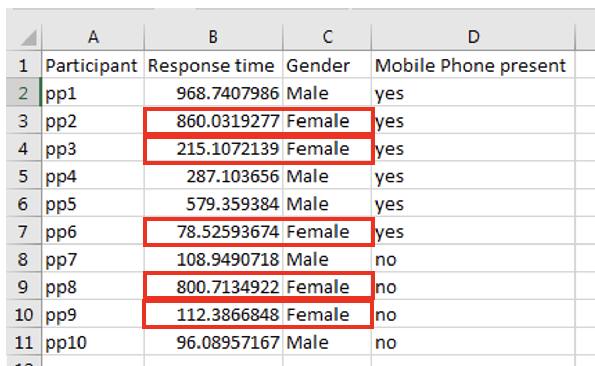
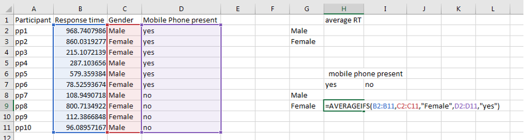
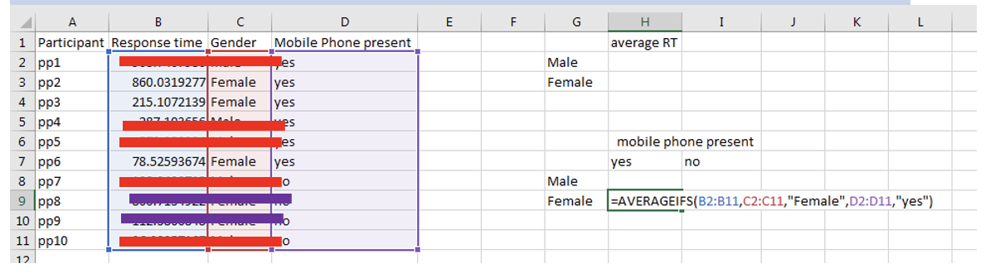

viewof question_1_response = Inputs.number([0,500], {label: "Mean female ms", step:1});
correct_female_ms = 413;
question_1_result = {
if(question_1_response == correct_female_ms){
return "Correct!"
} else {
return "Missing or incorrect."
}
}Averageifs
The spreadsheet this worksheet is based on can be downloaded from here. Go to the averageifs tab at the bottom of excel.
Sometimes it will be helpful to average only specific values in a column. One way to do this is using an “averageifs” formula.
Let us imagine we want separate average response times for male and female participants. We can use a formula that lets us use one column to identify which rows we want to average in another column. So if we want to average the response time for females, we’re only interested in the rows with female data:

So here’s how an “averageifs” formula could look:

So let’s break this down. This averageifs formula has three inputs:
The cells that will be averaged - B2:B11
A set of cells which will be used to determine which rows are selected: C2:C11
A value that is compared with the previous set of cells to determine which rows are selected: “Female”
In practice, the above formula does this:

So you now have a formula for calculating the mean scores based on one criterion, in this case gender. Let’s consolidate this by you answering the following questions
Your answer is…
Your answer is…
Now that you have calculated the average score based on one criterion, we can calculate it based on two criterion! It’s like the original formula, but we add another range of cells, and another value to compare the cells to.
So let us imagine we want the average response time for females with a mobile phone? We would use our original formula (see above), but before closing it we would add the cells referring to whether a mobile phone is present (B2:B11), and then compare these cells to the word “yes”. Let’s do that:

Just to really consolidate what is going on, like before, we focussed only on female participants:
But are now also focusing on rows in which a mobile phone is present (as indicated by “yes”)

So now you should be able to calculate the response times for all four groups of participants:
Your answer is…
Your answer is…
Your answer is…
Your answer is…